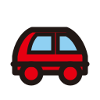
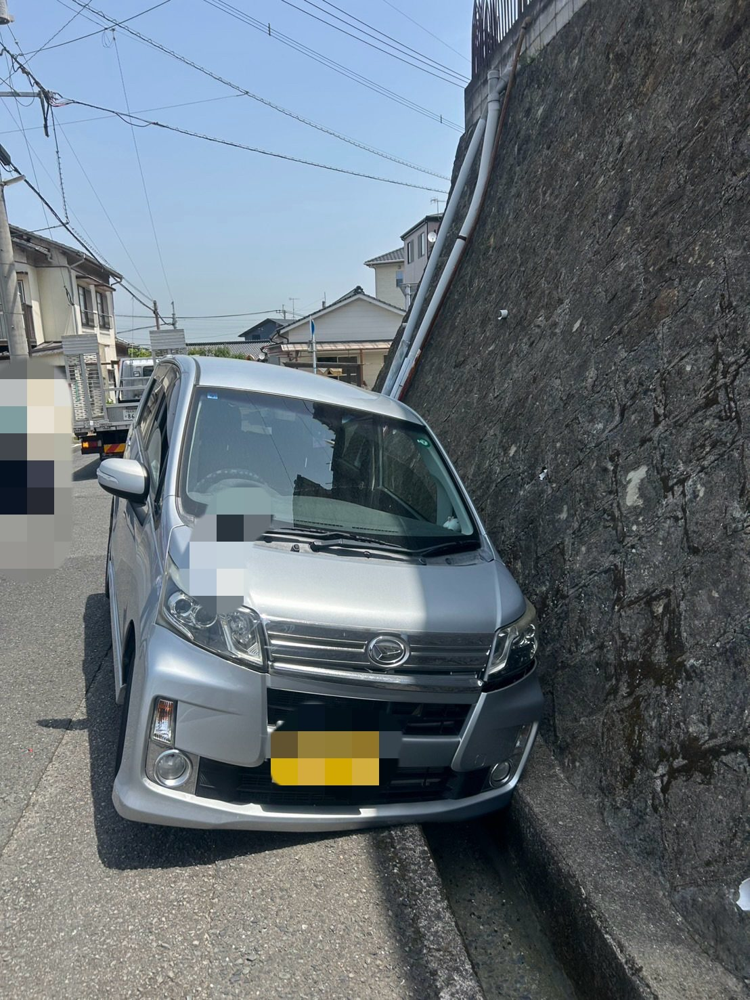
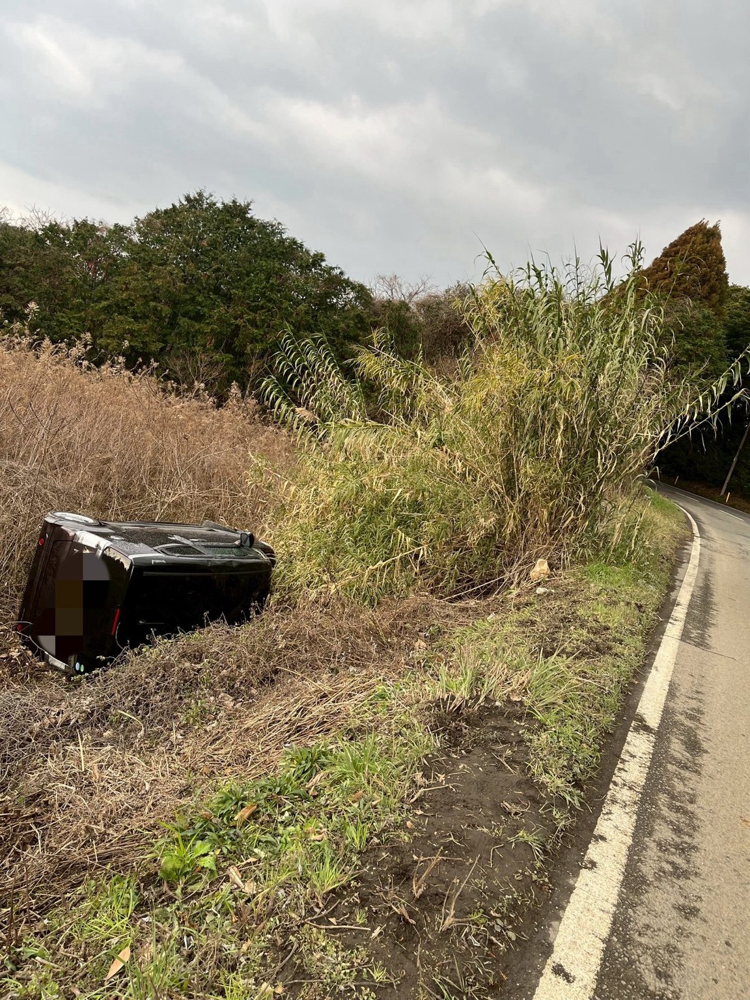
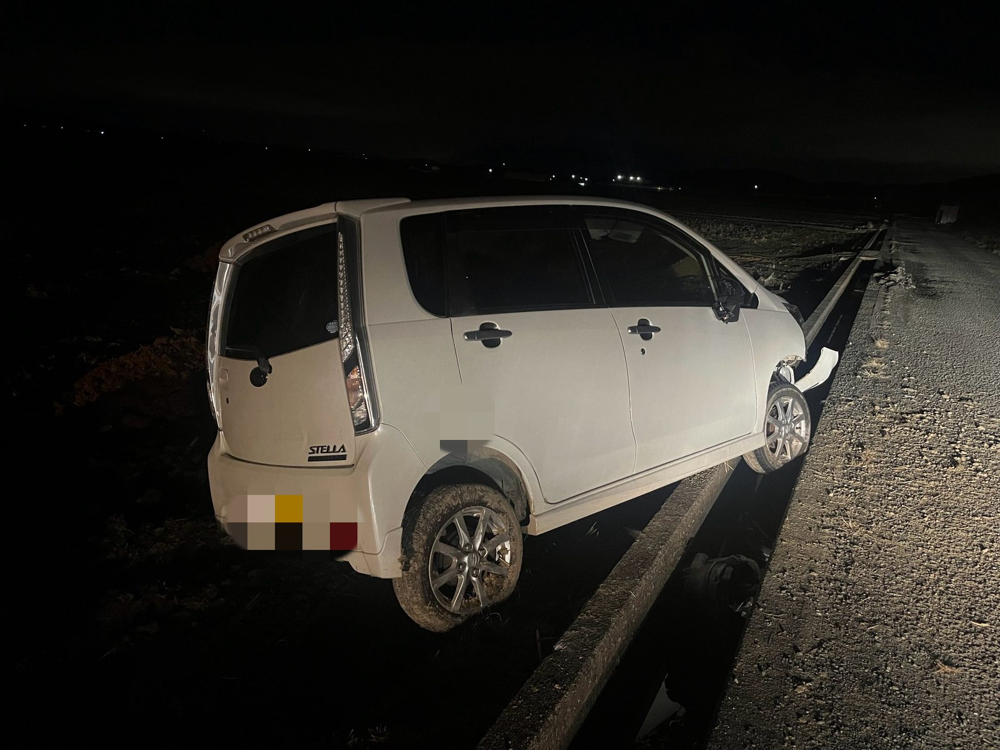
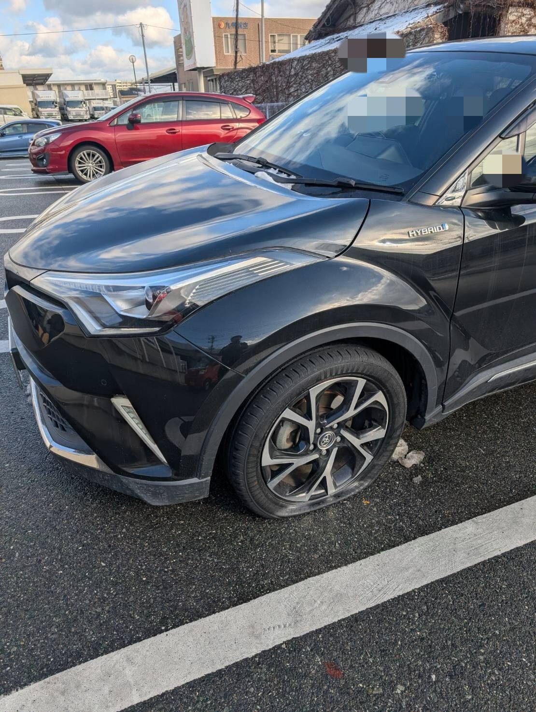
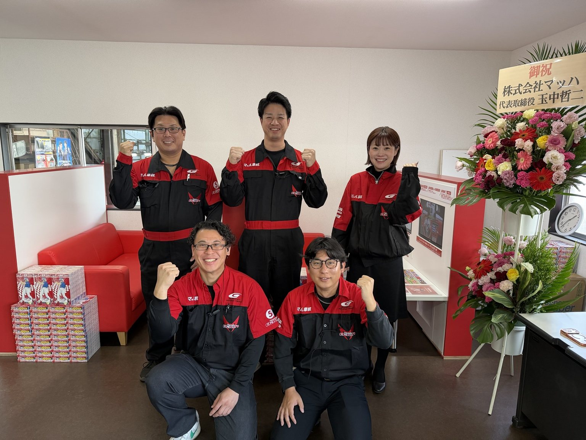
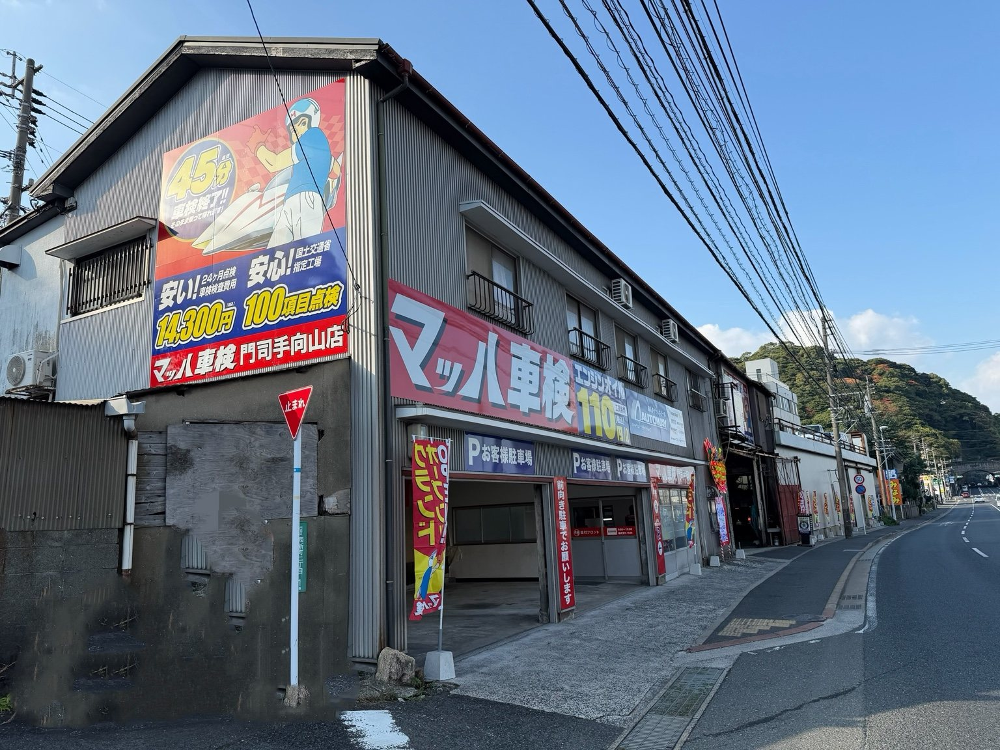

目的地への搬送から、整備・修理・車検のご相談まで。
関門モータースは、レッカー対応後の整備・修理・車検まで相談できる地域密着の整備工場です。

事故後の車両搬送をご相談ください。
エンジンがかからない時もまずはお電話を。
異音・警告灯・始動不能などのトラブルに。
自走できない、タイヤが不安な時も搬送します。
北九州市内の搬送は、分かりやすい一律料金でご案内します。
レッカー受付 8:00〜22:00

狭い道や側溝付近で動けなくなった車両もご相談ください。

道路脇への転落や自走できない状態も、まずは状況をお電話でお伝えください。

暗い場所での走行不能や事故後の搬送もご相談ください。

パンクやタイヤまわりのトラブルで走行が不安な時も対応します。
関門モータースは整備工場です。目的地への搬送はもちろん、故障や車検切れのお車は、そのまま整備・修理・車検の相談までできます。
「どこに頼めばいいか分からない」その時に、まず思い出してもらえる窓口を目指しています。

現在地、車種、車の状態をお聞かせください。
事故・故障・走行不能など内容を確認します。
目的地、または関門モータースまで搬送します。
故障・車検切れの場合もそのまま相談できます。

事故・故障・バッテリー上がり・エンジントラブル・走行不能など、まずはお電話ください。